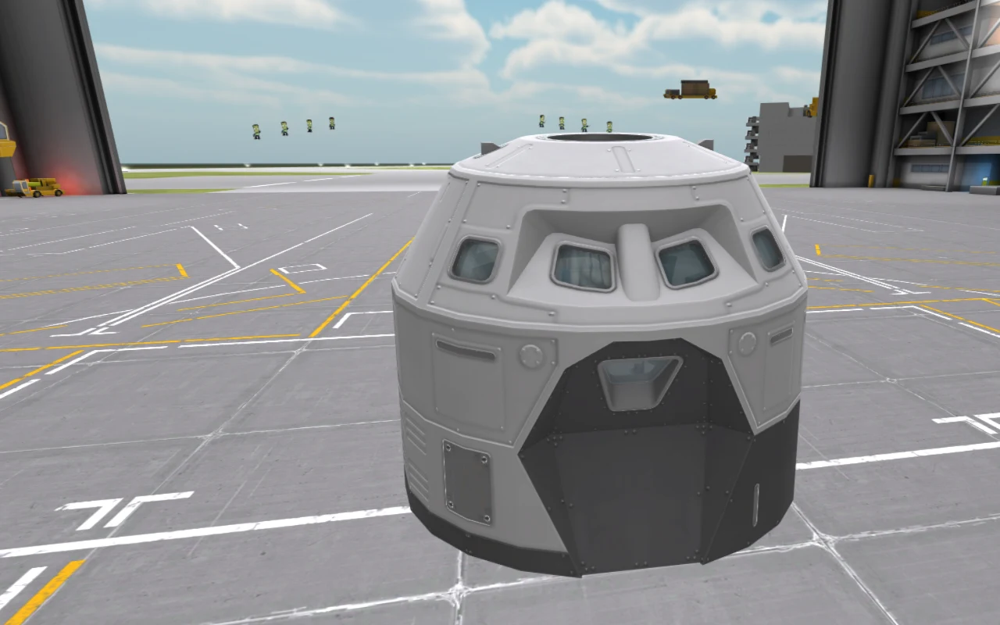
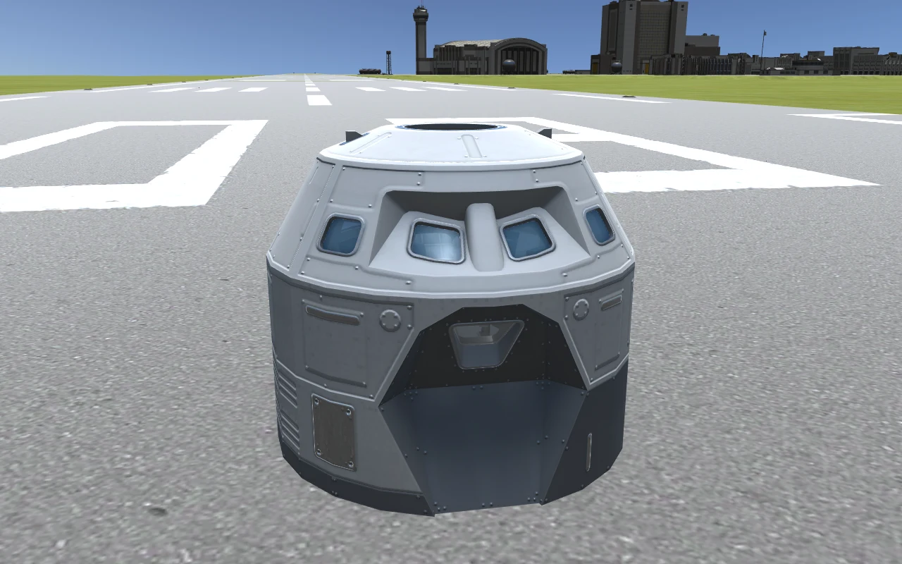
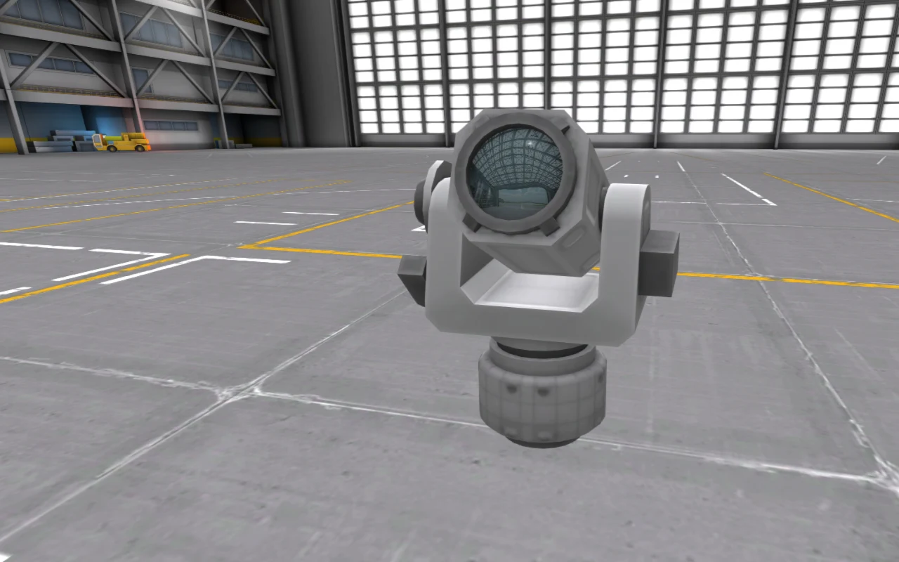
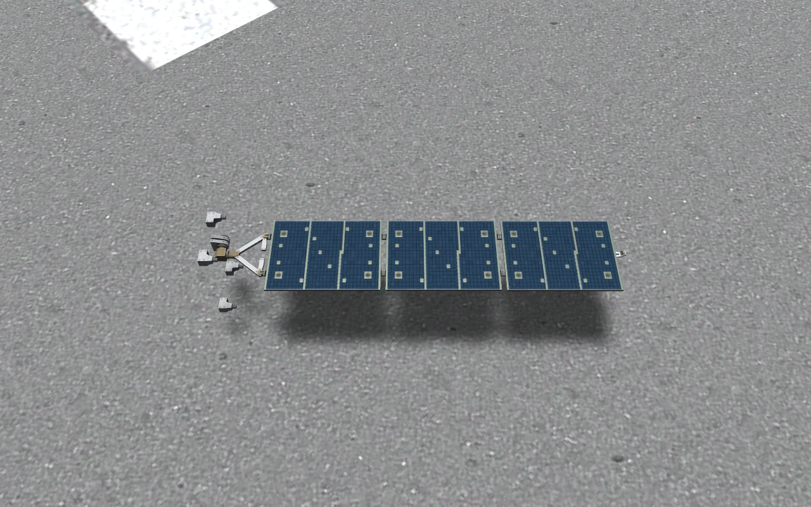

ShineFix home
← Back to supported mods
Artemis Construction Kit
Optics verified
Human tested
Version 1.4.0
Compatibility evidence
Original screenshot gallery
Parts
OR-C 'Odyssey' Command Module
OR-CB "Sojourn" Command Cabin


OR-OCS Optical Communications System

OR-SM-E Tracking Solar Array

OR-TRC Star Tracker Navigation System